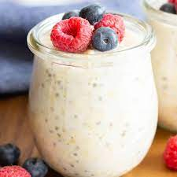

Classic Overnight Oats

Description
Almond Breeze almondmilk and oats make a great no-cook oatmeal. Change it up with different almondmilk flavors and toppings.
Nutrition Facts:
Calories 180
Total Fat 10.2 g
Cholesterol 0.0 mg
Sodium 150.8 mg
Potassium 401.2 mg
Total Carbohydrate 59.5 g
Dietary Fiber 11.5 g
Sugars 21.2 g
Protein 9.6 g
Ingredients:
- 1 ⅓ cups Almond Breeze Vanilla almondmilk
- 1 cup rolled oats
- ¼ cup granola (Optional)
- 3 tablespoons coarsely chopped Blue Diamond® Honey Roasted Almonds (Optional)
Steps:
- Stir together almondmilk and oats in a medium bowl. Spoon into 2 small bowls or canning jars if desired. Cover and refrigerate 8 hours to overnight, or for up to 3 days.
- Before eating, top with granola and almonds, if desired.